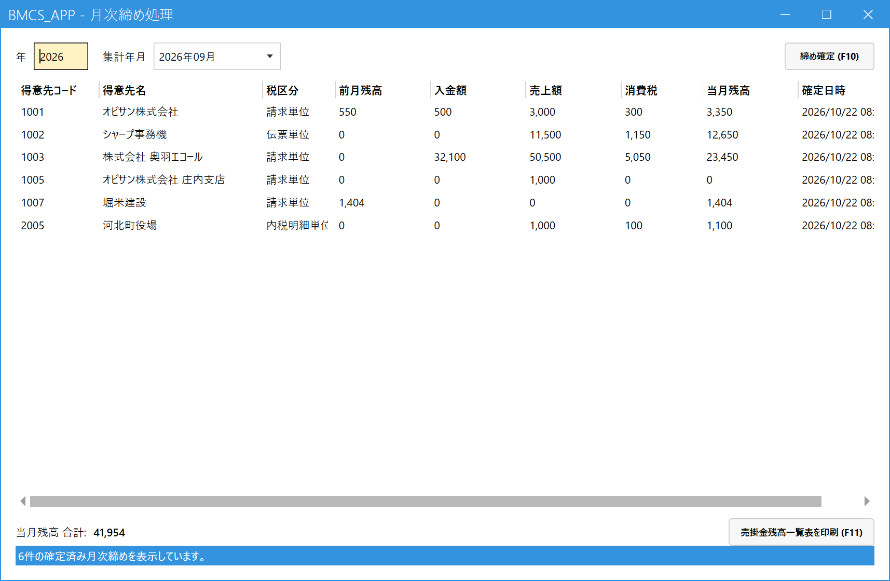

Perform Monthly Closing (Fix the Month-End Receivable Balances)
When to use this
Use this when a month has ended, to fix the month-end receivable balances of all customers. After a month is fixed, its sales and payments can no longer be corrected, canceled, or newly registered.
After closing, you can print the Accounts Receivable Balance List (売掛金残高一覧表).
Use this when a month has ended, to fix the month-end receivable balances of all customers. After a month is fixed, its sales and payments can no longer be corrected, canceled, or newly registered.
After closing, you can print the Accounts Receivable Balance List (売掛金残高一覧表).
Monthly Closing fixes all customers at once (you cannot choose a customer and close only that one). Run it only after all sales and payments for the month have been registered and you have checked the balances in the Customer Ledger (得意先元帳).
1.Open the screen
On the main menu, click Monthly Closing (月次締め処理) under Monthly (月次) (it is collapsed at first, so click it to open it). The screen that opens is a list of the monthly closings fixed so far.

- Year (年): Enter the year you want to view, as 4 digits.
- Closing Month (集計年月): Choose from the months closed in that year. The fixed results for the chosen month appear below.
- The fixed results for each customer: previous month balance, receipts, sales, consumption tax, and the current month balance (当月残高).
- Confirm Closing (締め確定) (F10): Press this to close a new month.
- Print Accounts Receivable Balance List (売掛金残高一覧表を印刷) (F11): Prints the whole list for the chosen month.
2.Close a month
- Press Confirm Closing (締め確定) (F10).
- On the "Monthly Closing Confirmation (月次締め確定)" screen, choose the Closing Month (集計年月) (it defaults to last month; you can choose from the current month back through the past 24 months).
- Press Execute Closing (締め実行), and choose "Yes (はい)" in the confirmation message.
- The list of the fixed month is displayed.
- A customer whose previous balance, sales, receipts and current month balance are all zero cannot be closed (it does not appear in the list).
- A customer whose month is already fixed, or for whom a later month is already fixed, is skipped (the reason is shown on screen). Close months in order, oldest first.
3.What happens after closing
| For the fixed month... | What you can do |
|---|---|
| Register new sales or payments | Not possible (you cannot register with a date in that month for that customer, and an error appears). |
| Correct or cancel existing sales or payments | Not possible. |
| Orders | No restriction (orders are not subject to Monthly Closing). |
If you closed a month by mistake, or you need to fix something after closing, an administrator releases it with Monthly Closing Release (月次締め解除処理). Once released, you can correct that month's slips right away. After correcting them, close the month again with "Monthly Closing (月次締め処理)" (the released results are overwritten).